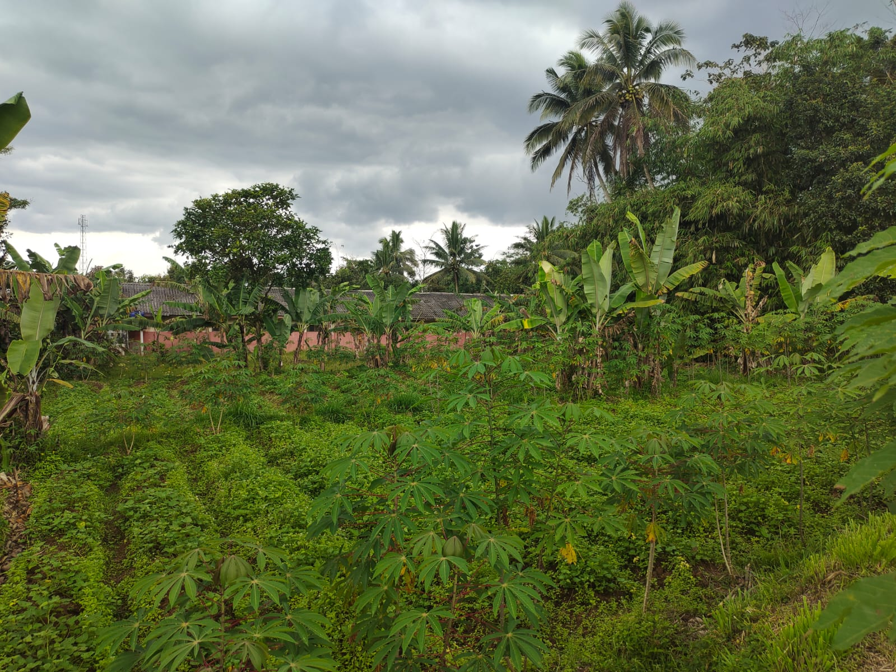
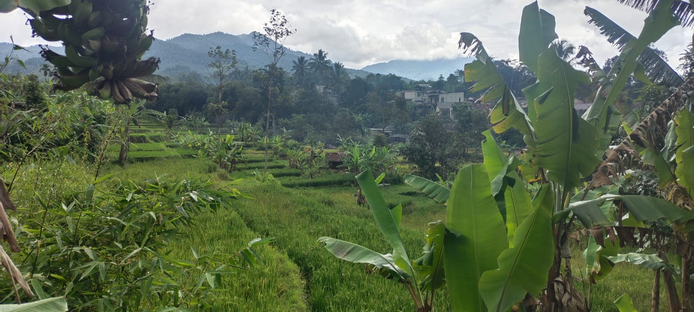
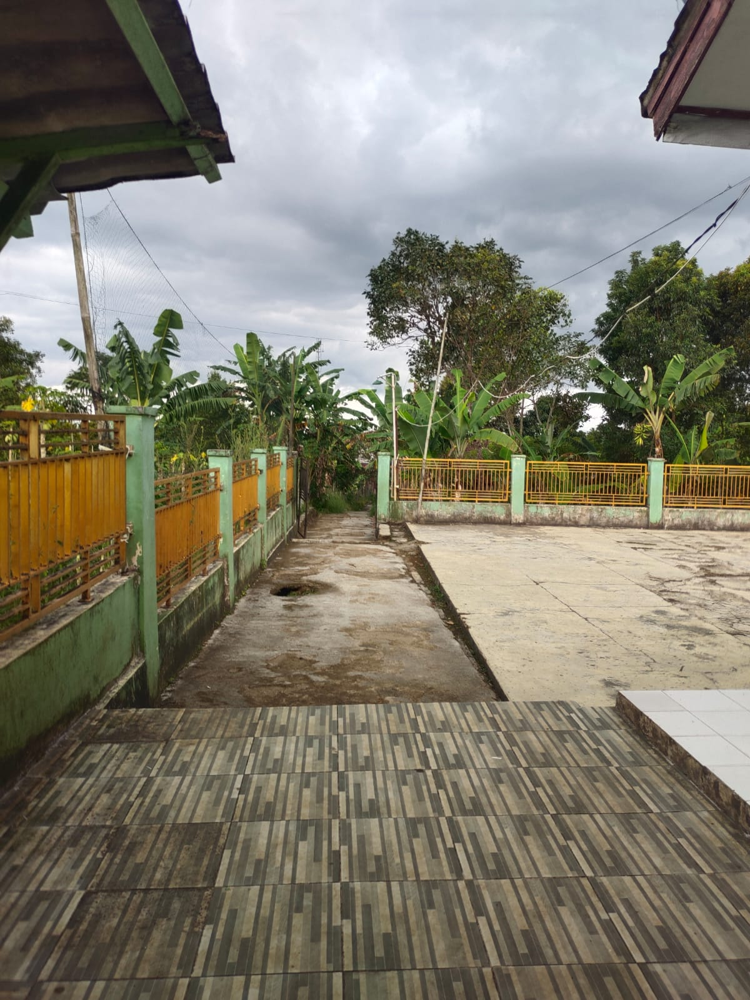
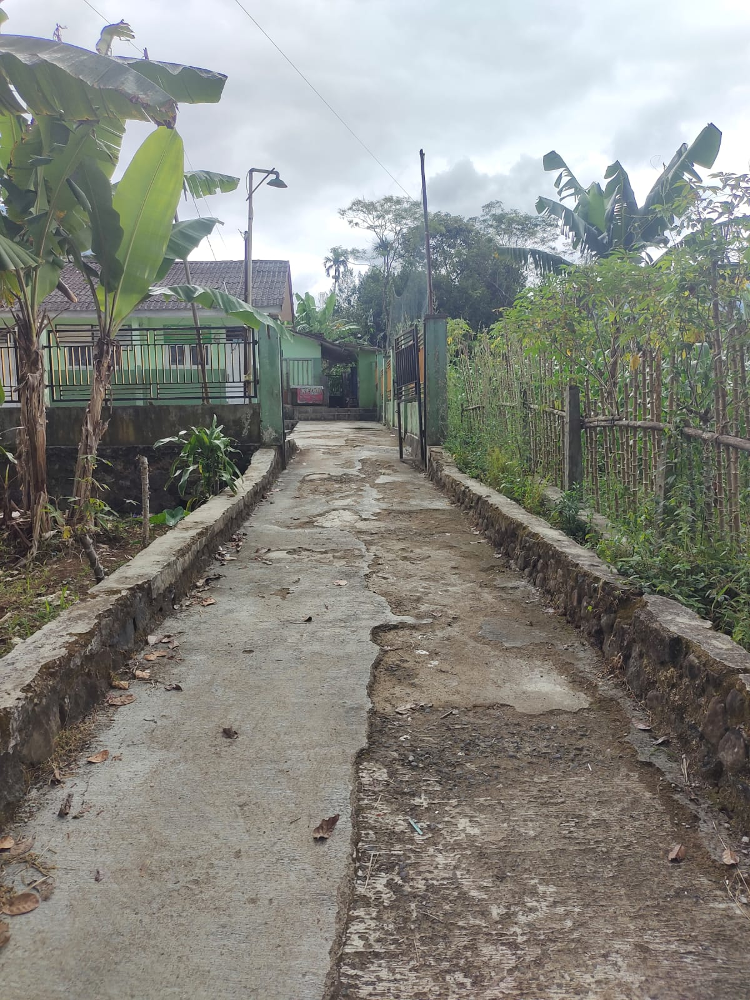

Lahan milik pribadi (direct owner), siap kerja sama jangka panjang untuk kebutuhan tower telekomunikasi. Lokasi strategis di wilayah Sukabumi.
Area sekitar membutuhkan peningkatan jaringan sinyal, sehingga lokasi ini sangat potensial untuk pembangunan tower telekomunikasi.




Untuk kerja sama atau survey lokasi, silakan hubungi langsung:
Nama: Rivan Maulana
WhatsApp: 085723000311
Siap survey kapan saja | Respon cepat via WhatsApp